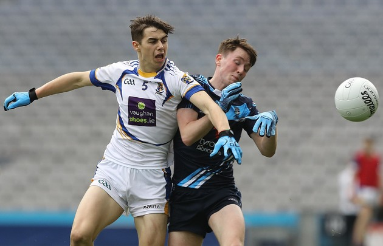

FLEMING-O CORP.
Putting the "new" in news!
Heneghan leads Mayo's Ballinrobe to thrilling All-Ireland victory in 80-minute classic
It took over 80 minutes, but eventually Mayo’s Ballinrobe Community School lifted the Paddy Drummond Cup after an enthralling affair in Croke Park.
With players dropping like flies from cramp all over the field, Ballinrobe had just enough in the tank to secure the victory. Star forward Conor Heneghan pointed the way with 1-5, while his partner in crime Cathal Slattery posted six points.
Both sides gave a good account of themselves, with an impressive array of score-taking lighting up this clash.
Ballinrobe led by 1-10 to 1-7 in the 50th minute, but the Tyrone school rallied late on with Pascal Donaghy and Tomas Hoy influential as they forced extra-time.
Ballinrobe bagged an unanswered 1-4 during the first-half of extra-time, with Darragh McGovern finding the net, and appeared to be on the path to victory.
St Ciaran’s hit the net in the 68th minute through Ciaran Traynor to leave the game in the balance once again, before a couple of Slattery frees saw the Connacht champions home.
.jpeg)
Ballinrobe showed no signs of nerves in the early stages and a well-taken early goal from Conor Heneghan handed them an ideal start. Thomas Conroy kicked two points in quick succession to leave the Mayo side five points up after 12 minutes.
St Ciaran’s eventually settled and started to pick holes in the Ballinrobe defence.
The Ulster champions displayed some fine long-range shooting with Daniel Millar and Pascal Donaghy firing over a brace apiece as St Ciaran’s scored six of the last seven scores to take an 0-7 to 1-3 lead at the break.
St Ciaran’s capitalised on some poor defending shortly after the restart as Cormaic Donnelly found the net, but from that point the Connacht champions took control.